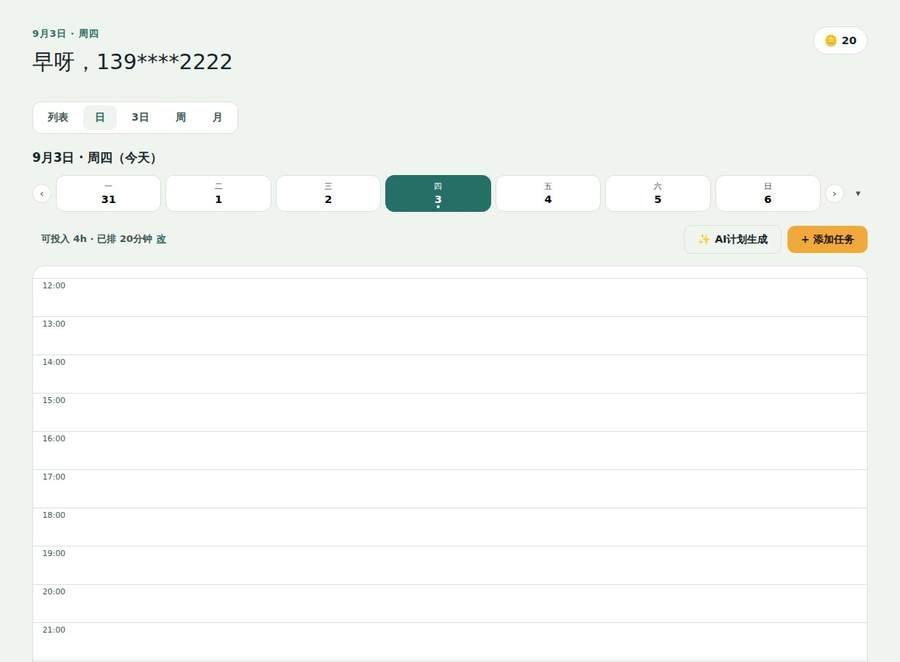
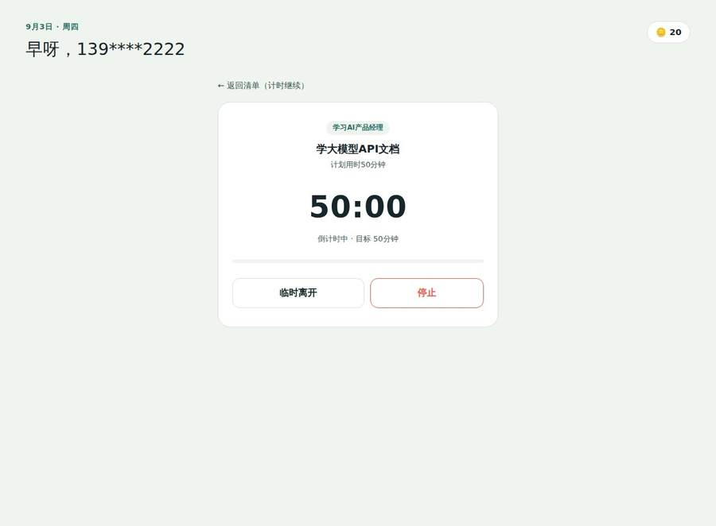
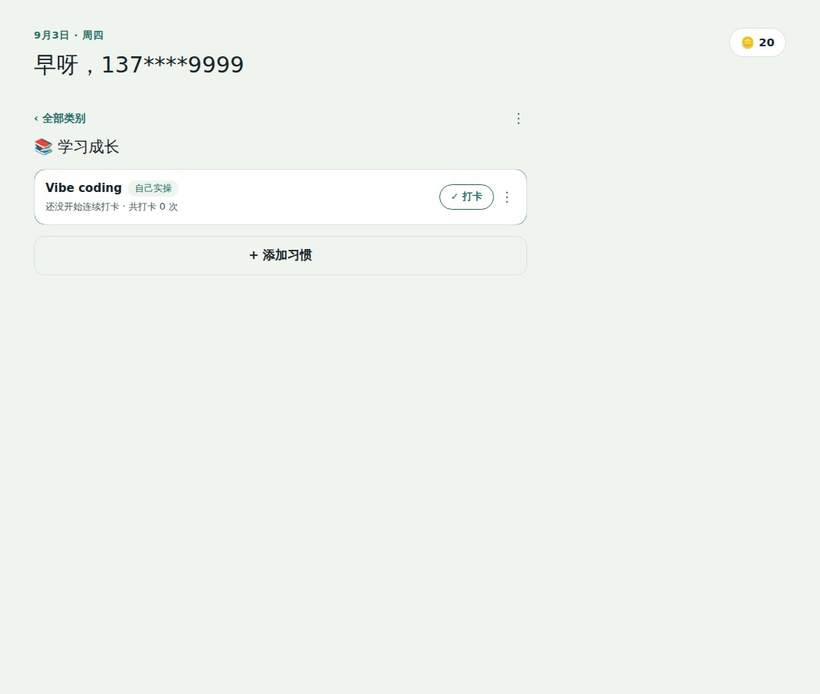
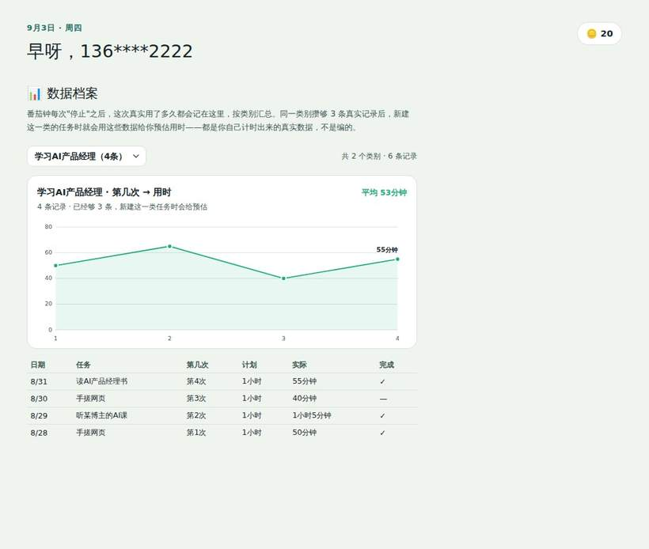

AI 每日排程
先保护固定事项、休息与机动缓冲，再按当前精力匹配任务；首次估时采用保守范围，完成后用你的真实耗时校准，不强迫把一天排满。
真实截图，不是效果图写给列了计划、却总被打乱的你
计划定太满被打乱、懒得动想先玩会儿手机、中途卡壳心态跑偏——这三种失控，市面上的打卡清单从不管，出了问题只能你自己重新排一遍。上岸鸭负责在过程中接住它们。
支持短信验证码 · 微信 · 抖音登录

今日航线
计划不是写完就算数的——是每天都要重新启程的一段航行。
本期功能索引 · 真实界面截图
先保护固定事项、休息与机动缓冲，再按当前精力匹配任务；首次估时采用保守范围，完成后用你的真实耗时校准，不强迫把一天排满。
真实截图，不是效果图
倒计时/正计时/不计时三种模式，正计时可暂停。停止时明确区分"临时离开"和"真的完成"，不会把中途放弃误算成已完成。
真实截图，不是效果图
右滑手势完成打卡，分类自己建、模式标签自己写——图里的"Vibe coding · 自己实操"就是真实数据，不是预设范例。
真实截图，不是效果图
按类别记录真实耗时、画出"第几次→用时"趋势曲线；同一类别攒够3条真实记录后，新建任务会用这些数据给预估，不瞎猜。
真实截图，不是效果图2 个已上线 · 2 个还在设计
金币商城、成就勋章已经能打开用了；好友 PK 和排行榜 / 组队还在图纸阶段，诚实标一下，别当成能点的功能
金币商城
金币换鸭子头像、主题色、免打卡卡
已上线好友 PK
同城同好匹配，比专注时长
设计中排行榜 / 组队
群体激励，增加紧迫感
设计中成就勋章
断一天，不代表全白干
已上线4
个真正做完、能打开用的核心模块
个人数据校准
从真实用时学习 · 精力匹配 · 休息优先
3
起攒够真实记录，才给你预估用时
0
条编造的使用数据——你看到的都是自己按出来的
这是一个仍在搭建中的个人项目原型，以上数字全部可以在代码里核对。没有虚构的用户量或评分——不是不想放，是确实没有。
上岸导航台 LANDING CONSOLE
🔓 设备柜 2/4 已开放
ONE TASK · REAL EVIDENCE · ADAPTIVE PLAN
监测任务是否卡住，读取真实资料，按证据拆解下一步，再根据实际耗时与精力安排执行。
不虚构进度；根据当前任务描述、计时和你主动填写的状态判断下一步。
仅展示你主动保存的文字；外部链接不会自动读取或被当作已核验正文
优先看真实记录，不套统一分钟数
仅记录你的主动反馈，不通过摄像头推断。
依据你描述的困难整理为依赖草图；未经确认不会写入原任务清单。
处理原则：项目证据是上游；自我介绍与 PPT 可共享证据并行准备；口播依赖确认稿件；投递前核对官方要求。实际状态以原始任务为准。
HEART NAVIGATION · PERSONAL EXECUTION COACH
不是催你更努力，而是结合真实精力、任务耗时和卡壳情况，帮助你找到此刻可执行的下一步。
每天的精力会变化，任务也会遇到意外。心航把状态反馈、任务执行、AI 解卡和复盘放在同一条流程里；保留你的选择权，不会自动覆盖原有排期。
只需报告此刻状态，不需要预测一整天。
按硬截止、固定时段和当前精力推进真实任务。点「编辑时间」设置几号做、几点开始与结束；点「开始」记录实际耗时。
正在读取原有任务…
先用最小步骤恢复进展，再进入真实任务工作区。
优先调用现有 AI 解卡入口；如果模型/API 尚未配置，会打开原任务工作区让你补充真实报错、资料和已尝试步骤，不显示假回答。
六个功能围绕原有任务中心工作，而不是六个孤立页面。
保留原有 V8 的任务中心、四象限、舒适排期和任务工作区。任务列表与计时读取原账号数据；AI 解卡跳转原任务工作区，真实模型回答取决于已配置 API。摄像头只有在你主动开启后才进行本地预览，不录制、不上传，也不自动推断心理状态。
COGNITIVE LOAD · ADAPTIVE PLANNING
先接住你的状态，再安排真实任务。工作、休息、放空和缓冲一起进入日程。
系统参考当前计时、卡壳记录、近期反馈和任务历史，保守估算认知负荷。你只需在状态变化时点一下，不必预测全天精力。
把你已经有权限查看的内容粘贴进来。外部链接只作为普通文本保存，不会自动抓取网页正文。
尚无手动保存的资料。